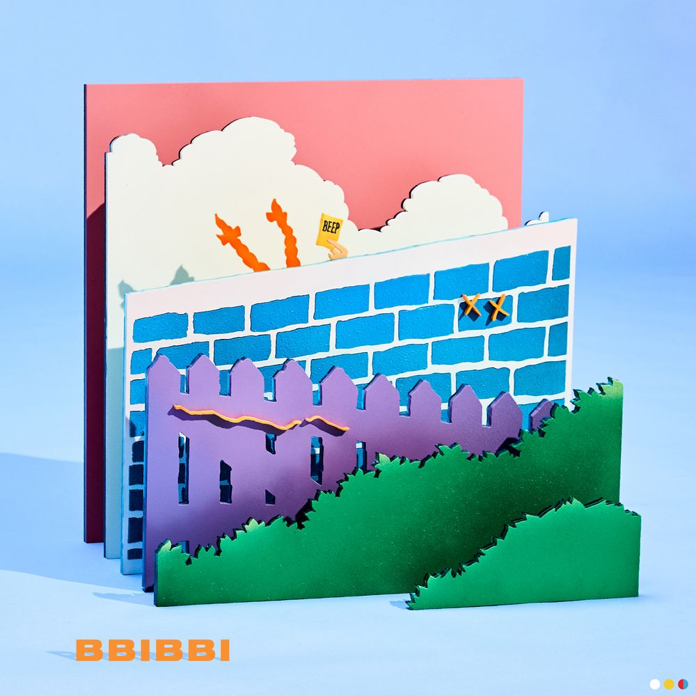

아이유 디지털 싱글 [삐삐] 올 해로 꼭 데뷔 10주년을 맞이한 아이유가 디지털 싱글 ‘삐삐'를 발표한다. 아이유의 10주년을 기념해 10월 10일 발표된 디지털 싱글 ‘삐삐'는, 아이유가 데뷔이후 처음으로 도전하는 Alternative R&B 스타일의 곡으로, 관계에 있어 무례하게 선을 넘는 사람들에게 던지는 유쾌하고 간결한 경고의 메시지를 담고 있다. 타인을 자신만의 기준으로 통제하거나 규정짓지 않는, 동등하고 독립적인 개개인 간의 건강한 유대관계가 어느 때보다 중요시 되는 요즘, 지금을 사는 모든 현대인들의 이야기가 될 수 있는 곡이다. 클래식한 정통 발라드곡 '미아'를 통해 열여섯의 어린 나이로 데뷔한 아이유는, 지난 10년 간 장르의 경계를 뛰어넘는 음악적 역량과 한계를 모르는 다채로운 매력으로, 현 가요계에 유일무이한 뮤지션이자 아티스트로서 놀라운 성장을 거듭해왔다. 10년이라는 시간의 무게처럼 깊이 있는 싱어송라이터 겸 프로듀서로도 점차 진화하고 있는 아이유가, 직접 프로듀싱과 작사에 참여한 이번 싱글 ‘삐삐'는, 여전히 보여줄 것이 무궁무진한 그녀의 팔레트처럼 대중들로 하여금 아이유의 또 다른 10년을 기대케 해준다.
